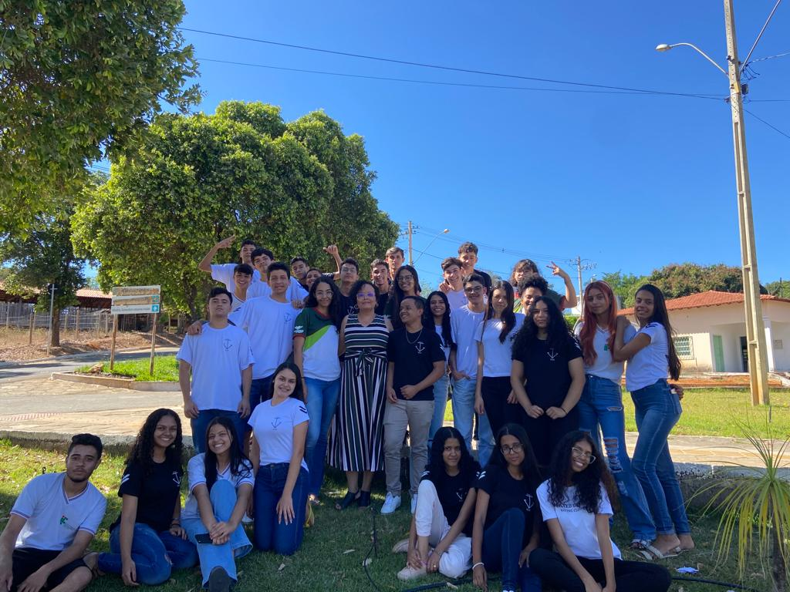

Info
rmandoO jornal informando, criado por uma turma de ensino medio esta aqui para passar as informações mais interessantes do momento. O nosso jornal tenta ser o mais dinamico e informativo possivel, sempre trazendo assuntos que vao iteressar a todos principalemente aos jovens!
A evolução dos jogos Com o aparecimento dos jogos no século XVI, nas primeiras civilizações, por meio de pesquisas foi descoberto que a Roma antiga e a Grécia utilizavam jogos para o desenvolvimento da educação, aprimoramento da aprendizagem e ensino...
Olá! A informática A é uma turma do curso técnico integrado ao ensino médio do IFNMG, mas especificamente do campus de Salinas, sendo a sala composta por um total de 33 alunos buscamos nos esforçar ao máximo para cumprir os nossos objetivos e atividades propostas.
Os textos aqui presentes fazem parte de um trabalho proposto pela professora Patrícia que ministra a matéria de português, juntos trabalhamos em fazer desde as matérias até a estética e nome do jornal. E em decorrência disso notamos que algo tão elaborado não deveria ser limitado a sala de aula, e assim por meio do aluno Victor surgiu o site atual, agradecemos desde já pelo seu acesso e reforçamos que para nós foi extremamente prazeroso participar deste projeto.
